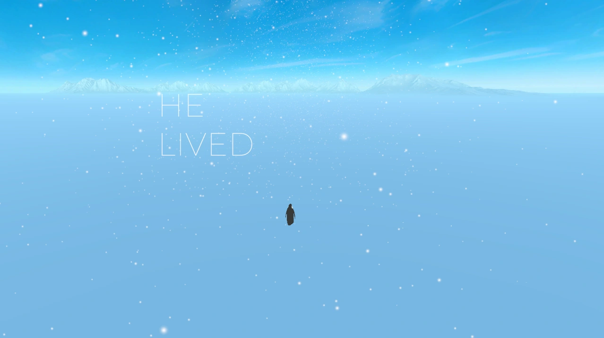
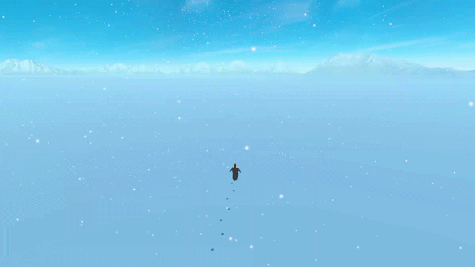

The penguin character standing alone in a vast landscape.
Completed in approximately two hours, this project is difficult to place within a single genre. It was created as an attempt to understand, even just slightly, the feelings of a penguin who leaves everything behind to walk towards the mountains.

A snippet from the core gameplay mechanic of walking.
In this game, I made several radical decisions concerning narrative design and player agency. It can also be interpreted as a satire of the 'walking simulator' genre.
Final Verdict
We often struggle to create clear definitions for many things in our lives. In my opinion, games are one of them. Sometimes, it's necessary to set aside complex market systems or satisfying upgrade loops and simply rest in the 'vibe' and 'feel' of an experience. This is the vibe of a penguin walking towards the mountains.